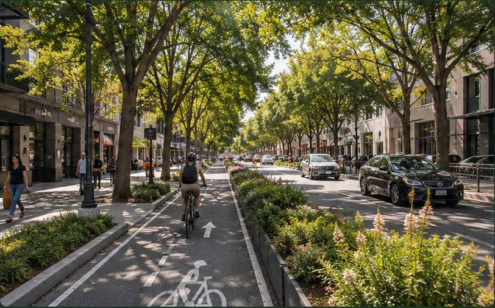
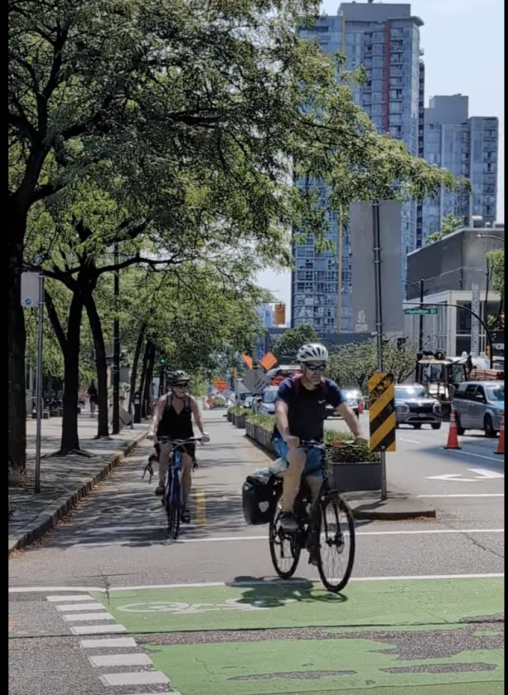
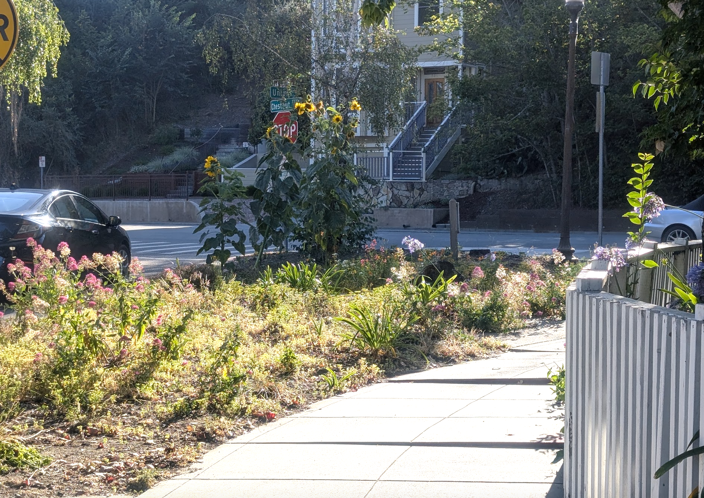

Rengstorff Avenue
Feasibility & Alternatives Study
Exploring how Rengstorff could become safer, greener, and more comfortable for everyday trips.
A feasibility study is an early step in designing a project. Nothing here is a final design. This is the stage for testing ideas, understanding what can fit, exploring trade-offs, and imagining what Rengstorff could become.

What could Rengstorff become?
This is a chance to rethink how the street works for the community today — a little like spring cleaning and redesigning a room in your home to better fit how you live now.
Who is it working for today?
Right now, Rengstorff doesn’t work especially well for anyone. People driving deal with congestion, dangerous speeds, and stressful intersections. People walking and bicycling can face a street that feels exposed, hostile, unsafe, uncomfortable, and designed primarily around moving cars through the neighborhood.
Getting around
Ever sat through two or three lights at Central while trains pass?
Congestion and difficult intersections affect people driving, too.
Feeling safe
Would you feel comfortable letting a child bike here?
A street shouldn’t depend on every person making the perfect decision every time. Better design can reduce speeds, improve visibility, and make ordinary mistakes less dangerous.
Being outside
Where do you look for shade on an 80°F afternoon?
Exposed pavement and direct sun can make walking and bicycling dramatically less comfortable. Trees, planting, and shade can change the thermal experience of the street.
Where do we actually choose to spend time?
We naturally spend time where it feels good to be — places with shade, greenery, and people. Rethinking Rengstorff can help create more of these places along the corridor.
What if more everyday trips felt easy?
Walk to the park. Bike to school. Meet a neighbor. Pick something up nearby.
Not every trip has to require getting into a car.
Making short walking and bicycling trips safer and more comfortable gives people another choice — one that can be less expensive, active, social, and enjoyable.
And redesigning the street isn’t only about transportation. Adding trees and nature can create shade, reduce radiant heat, support stormwater management, and make the street itself a more pleasant place to be.
Real-world precedent

Imagine a Rengstorff with…
Safety
Streets designed for people, not just cars.
Comfort
Easy to walk and bike, all year round.
Shade & heat relief
Cooler, more comfortable places to travel and spend time outside.
Nature
Trees, planting, and green infrastructure that support our environment.
Community
More opportunities to see neighbors, connect, and belong.

What could Rengstorff look like?
The City is considering three draft concepts. All include targeted intersection and crossing improvements; the larger concepts explore different ways to use additional street space.

What’s the real choice?
Alternative A is the common safety foundation. Alternatives B and C include those improvements, then reallocate additional right-of-way toward different priorities: safer bicycling infrastructure versus green infrastructure.
Protected bike lanes (A+B)Central → Leghorn · Class IV
*Not continuous — includes gaps in physical protection
Trees + GSI (A+C)Trees · landscaping · bioretention
Green stormwater infrastructure (bioretention)
Study overview